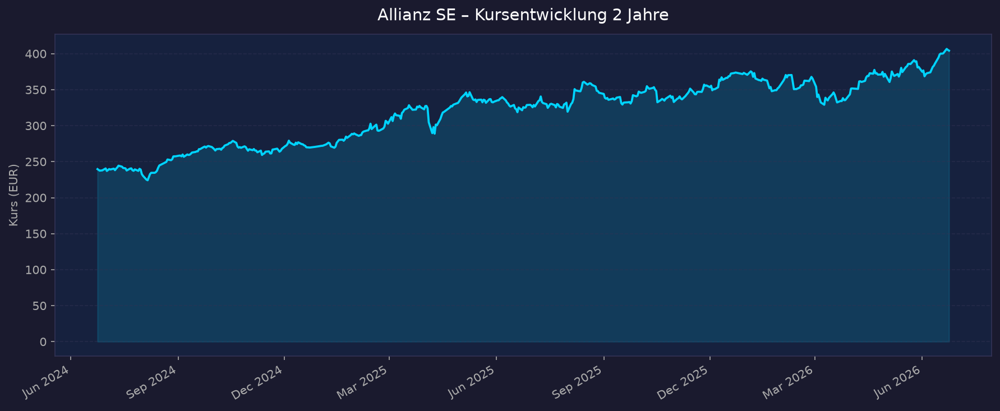
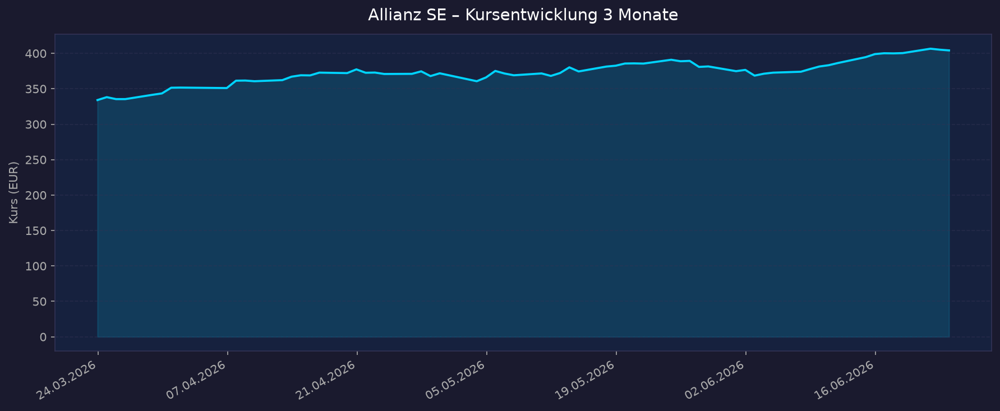

📈 1. Kursentwicklung
Aktueller Kurs: 404,20 € | Veränderung heute: +0,62%
Am 22.06.2026 erreichte die Allianz-Aktie mit 406,40 € ein neues All-Time-High. Die Jahresperformance 2026 beträgt +4,01 %, die Monatsperformance im Juni +6,70 %.
Chart – 2 Jahre

Chart – 3 Monate

| Zeitraum | Kurs Start | Kurs Ende | Veränderung |
|---|---|---|---|
| 2 Jahre (Jun 2024 → Jun 2026) | 239,66 € | 404,20 € | +68,7 % |
| 3 Monate (Mrz 2026 → Jun 2026) | 334,12 € | 404,20 € | +21,0 % |
| 52-Wochen-Hoch | — | 406,90 € | — |
| 52-Wochen-Tief | — | 334,10 € | — |
🔗 Interaktiver Chart (TradingView)
💹 2. KGV-Entwicklung
Aktuelles KGV (trailing): 13,06 | Forward-KGV 2026: 12,38
| Zeitraum | KGV | Einordnung |
|---|---|---|
| Aktuell (Jun 2026) | 13,06 | Leicht unter historischem Mittel (~13–15) |
| Feb 2026 | ~15,01 | Kurs noch im Aufwärtstrend |
| Nov 2025 | ~13,48 | Günstige Einstiegsphase |
| Jun 2025 | ~12,5 (est.) | Niedrige Bewertung |
| Jun 2024 | ~10–11 (est.) | Historisch günstig |
Bewertung: Das KGV von 13,1 liegt im unteren Bereich der historischen Bandbreite (11–18x) und ist im europäischen Versicherungsvergleich attraktiv. AXA handelt bei ~10–11x, Generali bei ~10–12x — Allianz besitzt eine leichte Bewertungsprämie aufgrund des PIMCO/AGI-Asset-Management-Mix und der überlegenen Solvency-II-Kapitalstärke. Das Forward-KGV von 12,4 signalisiert Unterbewertung relativ zum Gewinnwachstumspfad (+7–9 % p.a. laut Guidance).
💰 3. Bewertung: KBV & P/S
KBV: 2,33 | P/S: 1,33
| Kennzahl | Aktuell | Einordnung |
|---|---|---|
| KBV (Kurs-Buchwert-Verhältnis) | 2,33 | Für Versicherer mit starkem Asset Management akzeptabel; Peer-Median ~1,5–2,0x |
| P/S (Kurs-Umsatz-Verhältnis) | 1,33 | Sehr niedrig — bei einem Gesamtgeschäftsvolumen von 115 Mrd. EUR Umsatz (TTM) attraktiv |
Trend P/S: Leicht steigend mit dem Kurs in 2025/2026, aber aufgrund des Umsatzwachstums stabil. Das KBV von 2,3x liegt über dem Buchwert, ist aber für eine Gruppe mit ~18 % ROE (Return on Equity) fundamental gerechtfertigt: ROE > Eigenkapitalkosten → KBV > 1 ist ökonomisch korrekt.
💵 4. Dividende & Kapitalrückführung
Dividendenrendite: 4,22 % (yfinance) / 4,21 % (aktuell bei 406,60 €) Dividende je Aktie (GJ 2025): 17,10 € | Ausschüttungsquote: ~49,7 %
Dividendenhistorie (ausgewählt)
| Geschäftsjahr | Dividende je Aktie | Wachstum |
|---|---|---|
| GJ 2025 (ausgezahlt 08.05.2026) | 17,10 € | +11,0 % |
| GJ 2024 | 15,40 € | +11,6 % |
| GJ 2023 | 13,80 € | +10,4 % |
| GJ 2022 | 11,40 € | ca. +5 % |
Allianz hat die Dividende in den letzten 3 Jahren jeweils um ~10–12 % erhöht. Die 5-Jahres-Durchschnittsrendite liegt bei 5,52 %, der 10-Jahres-Schnitt bei 5,26 % — aktuell liegt die Rendite mit 4,2 % unter dem historischen Mittel, was auf das gestiegene Kursniveau zurückzuführen ist.
Policy: Mindestens 60 % des bereinigten Jahresüberschusses + Dividende mindestens auf Vorjahresniveau. Analystenprognose 2026: 18,31 € je Aktie (Dividendenrendite forward ~4,5 %).
Aktienrückkäufe
| Programm | Volumen | Zeitraum | Status |
|---|---|---|---|
| Rückkauf 2025 | 2,0 Mrd. € | Mrz–Dez 2025 | Abgeschlossen |
| Rückkauf 2026 | 2,5 Mrd. € | Mrz–Dez 2026 | Laufend (~1,27 Mrd. € bereits genutzt) |
Strategisches Ziel: 15 % des Jahresüberschusses über Rückkäufe zusätzlich zur Dividende an Aktionäre zurückgeben (2025–2027).
Einschätzung Nachhaltigkeit: Sehr hoch. Die Ausschüttungsquote von ~50 % bei einem stabilen operativen Gewinn von 17+ Mrd. EUR bietet reichlich Puffer. Die Allianz erwirtschaftet signifikante Überschusskapitalquoten (Solvency II 221 %), die strukturelle Kapitalrückführungen ermöglichen.
📊 5. Handelsvolumen
| Zeitraum | Ø Tagesvolumen | Auffälligkeiten |
|---|---|---|
| 10-Tage-Ø (yfinance) | ~693.884 Aktien | Nahe 52-Wochen-Hoch — leicht erhöhte Aktivität |
| 3-Monats-Ø (yfinance) | ~665.722 Aktien | Solides, stabiles Volumen für DAX-Blue-Chip |
| 2-Jahres-Ø | nicht verfügbar | — |
Volumentrend: Das Handelsvolumen ist für einen DAX-40-Titel moderat, was die institutionelle Halterstruktur widerspiegelt. Deutliche Volumenpikes entstanden um die Earnings-Releases (Feb 2026: Rekordjahr-Ankündigung + 2,5-Mrd.-Rückkauf; Mai 2026: Q1-Rekordergebnis). Das geringe Beta von 0,667 unterstreicht die defensive Natur der Aktie.
🏦 6. Insider Trades / Directors' Dealings
| Datum | Name | Funktion | Transaktion | Aktien | Kurs |
|---|---|---|---|---|---|
| Nov 2025 | Jürgen Lawrenz | Vorstand | Verkauf | n.v. | n.v. |
| Sep 2025 | Rashmy Chatterjee | Vorstand | Kauf | n.v. | n.v. |
| Jan 2025 | Dr. Andreas Wimmer | Vorstand | Verkauf | 428 | 311,30 € |
Insider-Aktivität bei Allianz ist gemäß regulatorischer Meldepflicht (EU-Marktmissbrauchsverordnung Art. 19) begrenzt und sporadisch. Einzelne Vorstandsverkäufe im Jan/Nov 2025 sind üblich für Vergütungsprogramme, kein Warnsignal. Ein Vorstandskauf (Sep 2025) ist positiv zu werten.
3-Monats-Überblick: Keine gemeldeten Transaktionen (Jan–Jun 2026 keine neueren Meldungen gefunden) Quelle: Allianz IR / BaFin / finanzen.net Insidertrades
🩳 7. Short-Positionen
Netto-Short (Float): ~0,03 % (ADR ALIZY, Daten: MarketBeat, Stand 29.05.2026)
| Zeitraum | Short Interest (Shares) | Veränderung |
|---|---|---|
| Mai 2026 | ~1.022.882 Aktien | Spike +896 % ggü. Vorperiode |
| Aug 2025 | ~275.300 Aktien (Hochpunkt) | — |
| Ø Normalniveau | ~100.000–275.000 | Sehr gering |
Einordnung: Extrem niedrige Short-Quote von <0,1 % ist charakteristisch für stabile DAX-Blue-Chips mit hohem institutionellem Langfristbesitz. Der aktuelle Anstieg auf ~1 Mio. Shares entspricht bei >380 Mio. ausstehenden Aktien weiterhin einem vernachlässigbaren Niveau (<0,3 %). Keine relevante Leerverkaufspositionierung erkennbar. Meldepflichtige Positionen (>0,5 % gemäß Bundesanzeiger) liegen nach verfügbarer Information nicht vor.
🗞️ 8. Aktuelle Nachrichten (2026)
| Datum | Quelle | Nachricht | Relevanz |
|---|---|---|---|
| 24.06.2026 | finanzen.net / boerse.de | Aktie nahe All-Time-High 406,90 €; Analystenkonsens (73 Analysten) Kursziel 393,73 € — aktueller Kurs erstmals über Konsens | Hoch |
| 22.06.2026 | boerse.de | Neues All-Time-High bei 406,40 € — Jahresperformance +4 %, Monatsperformance +6,7 % | Hoch |
| Jun 2026 | Handelsblatt/ad-hoc-news | Champions-Check Juni: Allianz führt Evident AI Index 2026 an — größter KI-Talentpool der Branche, 900+ KI-Anwendungsfälle | Mittel |
| Jun 2026 | ad-hoc-news.de | Allianz knackt neue Marken im Analystenkonsens; DAX-Finanzsektor gefragt | Mittel |
| 13.05.2026 | Allianz IR / Reuters | Q1 2026: Rekord-Operativergebnis 4,52 Mrd. EUR (+6,6 %) — Kursanstieg +3,3 % am Earnings-Day | Hoch |
| Mai 2026 | Various | National Bank of Greece + Allianz SE: Memorandum of Understanding unterzeichnet | Mittel |
| 25.02.2026 | Allianz IR | Neues Aktienrückkaufprogramm 2,5 Mrd. EUR 2026 angekündigt; Dividende +11 % auf 17,10 € | Hoch |
| 26.02.2026 | onvista / Reuters | FY2025 Rekordergebnis 17,4 Mrd. EUR operativ; Solvency II 218 %; Kursreaktion gedämpft ("Rekord trifft Zurückhaltung") | Hoch |
Sentiment: Überwiegend positiv — Rekordergebnisse, strukturelles Kapitalrückführungsprogramm, KI-Leadership in der Branche und All-Time-High signalisieren starkes Marktvertrauen. Dämpfend: durchschnittliches Analystenkursziel (393 €) liegt aktuell unter dem Kurs, was kurzfristiges Aufholpotenzial begrenzt.
📋 9. Letzte 3 Quartalsberichte
Q1 2026 (veröffentlicht 13.05.2026)
| Kennzahl | Ist | Erwartung | Abweichung |
|---|---|---|---|
| Gesamtgeschäftsvolumen | 53,0 Mrd. € | n.v. | org. +3,5 % |
| Operatives Ergebnis | 4.517 Mio. € | 4.360 Mio. € | +3,6 % Beat |
| Core EPS | 9,96 € | ~8,50 € (est.) | +17 % Beat |
| Shareholders' Core Net Income | 3.785 Mio. € | n.v. | +48,4 % YoY |
| Combined Ratio (P&C) | 91,0 % | 91,7 % | Beat (-0,7 Pp) |
| Solvency-II-Quote | 221 % | — | +2 Pp vs. FY2025 |
| Core RoE (annualisiert) | 24,2 % | — | Sehr stark |
Segmente: P&C +11,1 % auf 2.411 Mio. €; L&H –5,1 % auf 1.354 Mio. €; Asset Management +5,8 % auf 857 Mio. € (AuM: 2.043 Bio. €) Guidance: Jahresausblick operatives Ergebnis 17,4 Mrd. € ± 1 Mrd. € bestätigt Kursreaktion: +3,3 % am Earnings-Day (13.05.2026)
Q4 2025 / FY2025 (veröffentlicht 26.02.2026)
| Kennzahl | Q4 Ist | FY2025 Ist | Erwartung FY | Abweichung |
|---|---|---|---|---|
| Gesamtgeschäftsvolumen | 45,7 Mrd. € | 186,9 Mrd. € | n.v. | org. +8,1 % |
| Operatives Ergebnis | 4.297 Mio. € | 17.374 Mio. € | ~17,0 Mrd. € | Beat |
| Core EPS | — | 28,61 € | ~27,0 € (est.) | +6 % Beat |
| Shareholders' Core Net Income | 2.731 Mio. € | 11.113 Mio. € | n.v. | +10,9 % YoY |
| Combined Ratio (P&C) | — | 92,2 % | ~93 % | Beat (-0,8 Pp) |
| Solvency-II-Quote | — | 218 % | — | +10 Pp YoY |
| Core RoE | — | 18,1 % | — | +1,2 Pp YoY |
Dividende: 17,10 € je Aktie (+11,0 %) | Rückkauf 2026: 2,5 Mrd. € angekündigt Guidance 2026: Operatives Ergebnis 17,4 Mrd. € ± 1 Mrd. €; EPS-Wachstum 7–9 % p.a. (2025–2027) Kursreaktion: Gedämpft — "Rekord trifft Zurückhaltung" (Markt hatte Rekordjahr teils eingepreist); leicht negativ am Earnings-Day
Q3 2025 (veröffentlicht 14.11.2025)
| Kennzahl | Q3 Ist | 9M Ist | Erwartung Q3 | Abweichung |
|---|---|---|---|---|
| Gesamtgeschäftsvolumen | n.v. | n.v. | n.v. | org. wachsend |
| Operatives Ergebnis | 4.400 Mio. € | 13.100 Mio. € | n.v. | +12,6 % YoY |
| Core EPS (Q3) | 7,44 € | 21,43 € (9M) | ~7,00 € | +6,3 % Beat |
| Combined Ratio (P&C, Q3) | 91,9 % | 91,6 % (9M) | ~93 % | Beat (-1,1 Pp) |
| Loss Ratio (Q3) | 68,3 % | — | 69,8 % | Beat |
Guidance-Anhebung: Jahresprognose auf mindestens 17 Mrd. € angehoben (zuvor: ~16,5–17 Mrd. €) Kursreaktion: +1,99 % auf 369,70 € am Earnings-Day (14.11.2025)
🌍 10. Marktkontext & Wettbewerb
Markt/Branche: Globale Versicherung + Asset Management
- Allianz ist gemessen an Prämienvolumen und Marktkapitalisierung einer der 2–3 größten Versicherungskonzerne weltweit
- Globales Geschäftsvolumen 2025: 186,9 Mrd. € | Marktkapitalisierung: ~153 Mrd. €
- Drei Segmente: Property & Casualty (P&C) ~48 %, Life & Health (L&H) ~38 %, Asset Management ~14 % des operativen Ergebnisses
PIMCO & Allianz Global Investors (AGI)
| Einheit | AuM | Besonderheit |
|---|---|---|
| PIMCO | ~2,27 Bio. USD (1,86 Bio. USD Drittmittel) | Weltweit führender Anleihenmanager |
| AGI | ~591 Mrd. € | Multi-Asset, Aktien, Alternatives |
| Gesamt (Drittmittel) | ~2,0 Bio. € | Fee-stabiles Einkommensmodell |
Wettbewerbsvergleich — Kennzahlen FY2025
| Kennzahl | Allianz | AXA | Generali | Zurich |
|---|---|---|---|---|
| Solvency II / SST | 218 % | 224 % | 219 % | 259 % (SST*) |
| Combined Ratio P&C | 92,2 % | 90,6 % | 92,6 % | 92,6 % |
| KGV (approx.) | ~13,5x | ~9,8x | ~10–12x | ~17,1x |
| Dividendenrendite | 4,2–4,4 % | ~5,9 % | ~4,5 % | ~4,7 % |
Zurichs SST (Schweizer Standard) ist strenger als EU Solvency II — nicht direkt vergleichbar.
| Wettbewerber | Stärke | Schwäche |
|---|---|---|
| AXA (Frankreich) | Beste Combined Ratio (90,6 %), hohe Dividendenrendite, globale Präsenz | Kein Asset-Management-Arm in PIMCO-Größenordnung, günstigeres KGV 9,8x aber schwächeres EPS-Wachstum |
| Generali (Italien) | Günstige Bewertung, starke Position Europa/CEE | Höhere L&H-Abhängigkeit, kleinere Asset-Management-Plattform |
| Zurich Insurance (Schweiz) | Hohe Profitabilität P&C, starke Marke, konservative Kapitalverwaltung | Kein Asset-Management-Arm vergleichbarer Größe, Premium-KGV 17x |
| Munich Re | Weltmarktführer Rückversicherung, exzellentes Underwriting | Kein Direktversicherungsgeschäft im gleichen Umfang, anderes Geschäftsmodell |
Globaler Versicherungsmarkt 2025/2026:
- Globale Prämien 2025: EUR 6,9 Bio. (+7,1 % ggü. 2024); europäischer Markt ~EUR 1,3 Bio.
- 10-Jahres-CAGR global: +5,6 % — strukturelles Wachstum durch Urbanisierung, Mittelschicht in Schwellenländern
- NAT-CAT-Schäden 2025: USD 107 Mrd. versichert (6. Jahr in Folge >100 Mrd. USD); L.A.-Waldbrände allein USD 40 Mrd. (Rekord)
- 92 % aller Versicherungsschäden 2025 aus sekundären Naturgefahren (Hagel, Überflutung) — kein einziger Major-Hurrikan nötig
Branchentrends 2026:
- Zinsnormalisierung: EZB moderat sinkende Zinsen → positiv für L&H-Neugeschäft (neue Abschlüsse), Kapitalanlageerträge leicht rückläufig
- Naturkatastrophen/CAT: Versicherte Schäden strukturell >USD 100 Mrd. p.a. → systematische Prämienerhöhungen im P&C möglich (günstig für Combined Ratio bei disziplinierten Versicherern)
- KI-Transformation: Allianz führt Evident AI Index 2026 — größter KI-Talentpool, 900+ Anwendungsfälle; Effizienzgewinne in Schadensabwicklung und Underwriting erwartet
- Regulierung (Solvency II Reform): Direktive seit Jan. 2025 in Kraft, Umsetzungsfrist Jan. 2027 — EUR 80 Mrd. Investitionskapazitätsfreisetzung für langfristige Anlagen; Berichtslast –25 %; tendenziell vorteilhaft für gut kapitalisierte Häuser wie Allianz (221 % Quote)
- Asset Management-Zuflüsse: PIMCO +USD 160 Mrd. AuM in 9 Monaten; Q1 2026 Nettomittelzuflüsse 45,2 Mrd. € — strukturell positiv für Gebühreneinnahmen
Marktposition: Führend — Allianz ist im globalen Top-3 der Versicherer, Marktführer in Deutschland, stark in Europa, USA (über PIMCO) und Asien-Pazifik. Die Kombination aus P&C-Disziplin (Combined Ratio 91–92 %) und Asset-Management-Plattform (2+ Bio. € AuM) ist im Wettbewerbsvergleich einzigartig.
Risiken:
- Naturkatastrophen-Jahre können Combined Ratio kurzfristig verschlechtern (Klimawandel = strukturell höhere CAT-Frequenz)
- Regulatorisches Risiko aus IFRS 17-Übergangseffekten und möglichen Solvency-II-Regeländerungen
- PIMCO-Abflüsse bei Zinsrisiko-Neubeurteilung (Anleihen-Fonds reagieren sensitiv auf Zinserwartungen)
- Währungsrisiken (USD/EUR) da erheblicher Teil der Einnahmen in USD (PIMCO)
- Geopolitik & Wirtschaftsabkühlung können Prämienvolumina in L&H und Asset Management belasten
💎 11. Value-Bewertungsmatrix
Bewertung nach 5 value-orientierten Kriterien (1–10, höher = attraktiver für langfristige Anleger):
| Kriterium | Gewicht | Punkte | Begründung |
|---|---|---|---|
| 💰 Bewertung (KGV/KBV vs. Historie & Peers) | 25 % | 7/10 | KGV 13,1 / Forward 12,4 — unter historischem Mittel, unter Wachstumsniveau; KBV 2,3 durch ROE 18,7 % gerechtfertigt. Leichte Prämie vs. AXA/Generali, aber durch bessere Kapitalstärke berechtigt |
| 💵 Dividende & Kapitalrückführung | 25 % | 8/10 | Rendite 4,2 %, +11 % Dividendenwachstum 2025, Payout 50 %, Rückkäufe 2,5 Mrd. € 2026 (~1,6 % Marktkapitalisierung p.a.), Policy-Transparenz hoch |
| 🛡️ Bilanzstärke & Stabilität (Solvency II, Rating, Combined Ratio) | 20 % | 9/10 | Solvency II 221 % (weit über Minimum 100 % und Zielkorridor), Combined Ratio 91 % (exzellent), Core RoE 18,1 %, AA-Rating |
| 📈 Gewinnqualität & Wachstum (EPS-Wachstum, ROE) | 15 % | 7/10 | Core EPS +12,5 % in FY2025, Guidance 7–9 % p.a. (2025–2027), ROE 18,7 % (yfinance). Leicht gebremst durch L&H-Segment (–5,1 % in Q1 2026) und Zinsumfeld |
| ⚡ Katalysatoren & Risiken | 15 % | 6/10 | Katalysatoren: KI-Transformation, PIMCO-Zuflüsse, strukturelle CAT-Preissteigerungen. Risiken: Naturkatastrophen-Jahre, USD/EUR Währung (PIMCO), Kurs nahe ATH (kurzfristig kein Upside im Konsens) |
| Gesamt (gewichtet) | 100 % | 7,4/10 | Solide Value-Aktie mit Qualitätspremium — nicht günstig, aber fair bewertet mit strukturellen Stärken |
5-Jahres-Szenario (2031)
Grundannahmen: Dividendenwachstum 7–10 % p.a., Rückkäufe ~1,5 % Marktkapitalisierung p.a., organisches EPS-Wachstum 5–9 %
| Szenario | Kursziel 2031 | Kursrendite | + Kumulierte Dividenden | Gesamtrendite (5J) |
|---|---|---|---|---|
| Bären-Case | ~350 € | –13 % | ~+95 € (~25 %) | ~+12 % gesamt |
| Base-Case | ~500 € | +24 % | ~+110 € (~28 %) | ~+52 % gesamt |
| Bullen-Case | ~650 € | +61 % | ~+130 € (~33 %) | ~+94 % gesamt |
Dividendenbeitrag im Base-Case ~28 % des Einstiegskurses über 5 Jahre bei ~4–5 % Rendite p.a. — Dividende macht im Bullen-Case trotzdem einen erheblichen Teil der Gesamtrendite aus.
📝 Gesamteinschätzung
Stärken:
- Einzigartiger Doppelmix: P&C-Versicherungsdisziplin (Combined Ratio 91 %) + globales Asset Management (PIMCO/AGI, 2+ Bio. € AuM) schaffen strukturell stabile, diversifizierte Ertragsströme
- Außergewöhnliche Kapitalstärke: Solvency II 221 % ermöglicht kontinuierliche Kapitalrückführung (Dividende + 2,5 Mrd. € Rückkäufe 2026) ohne Bilanzdruck
- Verlässliches Dividendenwachstum: >10 % p.a. in 2024/2025, klare Policy (60 % Payout + 15 % Rückkäufe), 4,2 % laufende Rendite
- Rekord-Gewinnwachstum: Operatives Ergebnis 3 Jahre in Folge auf Rekordniveau (+8,4 % in FY2025, Q1 2026 bereits Rekord), EPS-Guidance 7–9 % p.a. bis 2027
- KI-Leadership: Führt Evident AI Index der Versicherungsbranche an — 900+ Anwendungsfälle könnten mittelfristig Effizienzgewinne (Combined Ratio) und neue Geschäftsmodelle erschließen
Risiken:
- Naturkatastrophen-Exposition: Klimawandel erhöht Frequenz und Schwere von CAT-Ereignissen — Schaden-Jahr kann Combined Ratio kurzfristig auf >95 % treiben und Kurs unter Druck setzen
- PIMCO-Abhängigkeit & Zinsrisiko: PIMCO-Anleihenfonds reagieren sensitiv auf Zinspolitikwenden; Nettomittelabflüsse in Zinskorrekturen würden Gebühreneinnahmen belasten
- Kurs nahe ATH / Konsens unter Kurs: 73 Analysten-Konsens (393 €) aktuell unter Kurs (404 €) — kurzfristiges Aufwärtspotenzial im Markt bereits eingepreist
- Währungsrisiko USD/EUR: Bedeutender Teil der Erträge aus PIMCO in USD denominierten Märkten — Euro-Stärke würde Gewinne bei Konsolidierung mindern
- Regulatorische & makroökonomische Risiken: Solvency II-Anpassungen, IFRS 17-Übergangswirkungen, Wirtschaftsabkühlung in Europa (weniger Neugeschäft L&H und Asset Management)
Fazit: Allianz SE ist eine der qualitativ hochwertigsten Versicherungsaktien Europas mit einem einzigartigen Geschäftsmodell, das stabilen Cashflow aus P&C-Underwriting und wachsende Gebühreneinnahmen aus dem weltgrößten Anleihenmanager PIMCO kombiniert. Die Bewertung ist mit KGV 13/Forward-KGV 12 moderat und durch die hohe Kapitalstärke (Solvency II 221 %, ROE 18,7 %) fundamental gerechtfertigt — nicht günstig, aber fair für ein Qualitätsunternehmen mit verlässlichem Dividendenwachstum. Value-Score 7,4/10. Für langfristige, dividendenorientierte Anleger ein solides Kernportfolio-Investment mit geringerem Beta (0,67) als der Gesamtmarkt.
Datenquellen: Yahoo Finance · Allianz SE Investor Relations · Macrotrends · Finanzen.net · OnVista · Reuters · ad-hoc-news.de · aktiencheck.de · MarketBeat · experten.de · Bundesanzeiger (Leerverkäufe) Keine Anlageberatung — rein informative Auswertung öffentlicher Daten